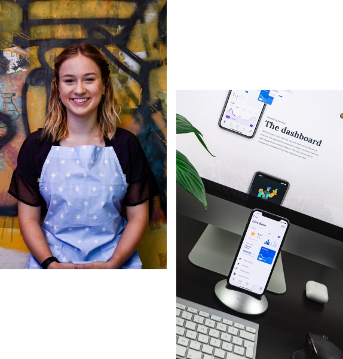
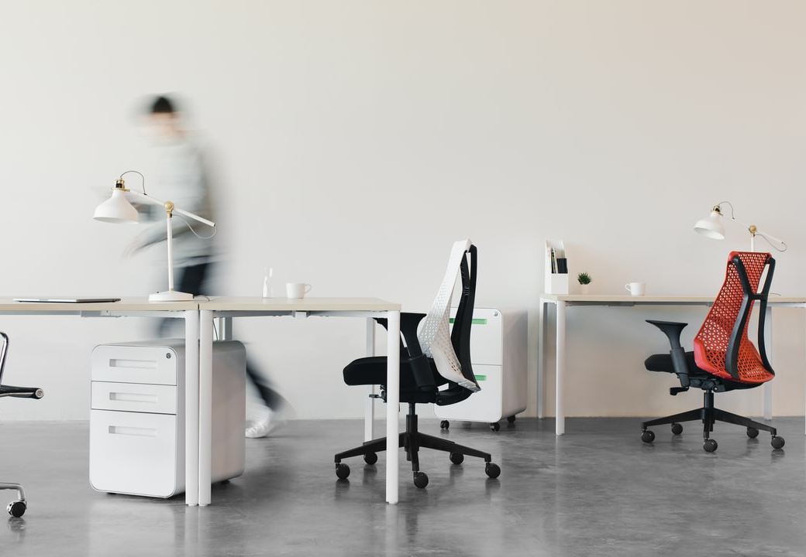
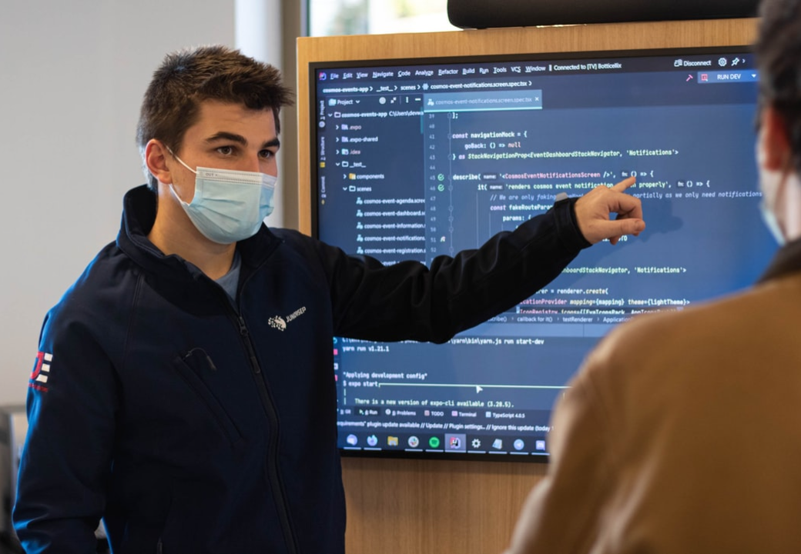
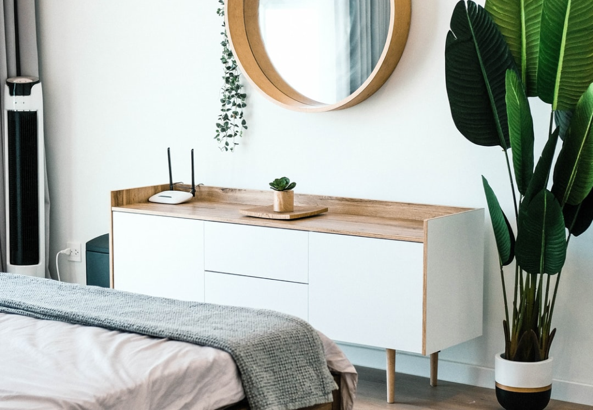

kickass experiences
diseñamos soluciones para para tu empresa centradas en el usuario
Contáctanos

plataforma de servicios de limpieza con más de medio millón de servicios prestados en todo el país. Se ejecutó un proceso de diseño de servicios y UX
Bootcamp tecnológico con presencia en todos los países de latinoamérica, con más de 10k usuarios, las necesidades de diseño de servicios y productos internos de control implican un reto cambiante

Plataforma de enlace para enfermeras y cuidadores profesionales, con las personas que requieren de sus servicios en la Ciudad de México
Marketplace de lujo de servicios para prestadores de servicios de limpiza, se requirió un proceso largo de diseño de sitio web, control de servicios y crecimiento durante la etapa de más alto crecimiento

Marketplace de prestadores de servicios de cuidado y mantenimiento para el hogar y oficinas